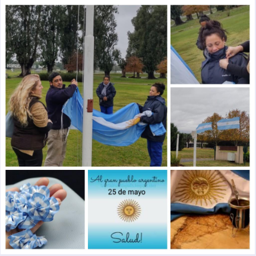

Queremos agradecer especialmente al grupo de trabajo del Barrio HSM, que colaboró
en el izamiento de la bandera y por el embanderamiento de cada uno de los 11 barrios
que componen la comunidad en HSM y así, mantener vivo el espíritu patrio del 25 de
Mayo. - COMISIÓN de SOCIALES